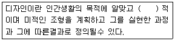

컬러리스트산업기사 (2015-05-31 기출문제)
1과목: 색채심리
1. 색채 연상 형태의 연결이 틀린 것은?
- 주황 - 직사각형
- 파랑 - 육각형
- 보라 - 타원
- 갈색 - 마름모
(정답률: 70%)

2. 문화가 갖는 역사 또는 삶의 방식에 의하여 색채가 전하는 메시지와 상징이 달라지는데, 각 민족색채의 상징적 특징을 대표적으로 표현해 주는 상징물은?
- 상용되는 자동차 색
- 많이 팔리는 음식의 색
- 국기의 색
- 공공건물의 색
(정답률: 100%)
3. 색채 조절의 효과로 틀린 것은?
- 신체의 피로, 눈의 피로를 막아준다.
- 공장에서 사고를 줄이기 위해 경고를 나타내는 주황색으로 내부를 칠한다.
- 안전을 기하기 위해 자동차의 바깥부분을 난색계통으로 칠한다.
- 주거공간의 남향에 있는 방에는 한색계열의 색으로 칠한다.
(정답률: 67%)
4. 색채정보 수집방법에서 가장 많이 쓰이는 방법은?
- 실험 연구법
- 표본조사 연구법
- 현장 관찰법
- 패널 조사법
(정답률: 82%)
5. 색채 설명 중 옳지 않은 것은?
- 파버비렌은 보라색의 연상 형태를 타원으로 생각했다.
- 노란색은 배신, 비겁함이라는 부정의 연상언어를 가지고 있다.
- 초록은 부정적인 연상언어가 없는 안정적이고 편안함의 색이다.
- 주황은 서양에서 할로윈을 상징하는 색채이기도 하다.
(정답률: 73%)
6. 색채계획을 위한 기초로 색채 기호 조사를 실시하고자 한다. 옳은 설명은?
- 배색과 이미지 언어보다는 좌표를 이용하는 것이 좋다.
- 색채 기호조사 결과는 홍보의 효과는 없다.
- 선호, 비선호 보다는 절대적인 상징색을 조사한다.
- 색채 기호조사는 감성을 다루므로 SD법을 사용하여 분석한다.
(정답률: 90%)
7. 색채와 다른 감각간의 교류현상은?
- 공간감각
- 공간지각
- 공감각
- 연결지각
(정답률: 81%)
8. 코퍼레이트 컬러(coperate color)란?
- 전통적인 색이라는 의미로 민족적인 또는 국가적인 배경의 이미지를 주는 색이다.
- 기업의 커뮤니케이션 활동 속에서 기업의 아이덴티티를 소구하기 위한 고유의 색이다.
- 일반적으로 배색의 대상이 되는 부위에서 가장 넓은 면적의 부분을 차지하는 색이다.
- 전체 색조에 긴장감을 주거나 시선을 집중시키는 효과가 있다.
(정답률: 77%)
9. 색채의 연상 효과와 관련이 없는 것은?
- 제품 정보로서의 색
- 사회, 문화 정보로서의 색
- 국제 언어로서의 색
- 색채 표시 기호로서의 색
(정답률: 60%)
10. 색채의 심미적 효과에 대한 내용과 관계가 먼 것은?
- 색채조화란 2개 이상의 배색으로 보는 사람들에게 즐거운 감정을 주는 미적효과를 말한다.
- 색의 기호는 여러 가지 상황이나 조건에 따라 차이가 있다.
- 고채도 끼리의 배색은 눈에 띄므로 색채 배색시 가장 많이 사용한다.
- 하나의 색만으로 의미나 상징, 조화를 이루는 것은 아니다.
(정답률: 78%)
11. 안전표지에 관한 안전색 및 대비색으로 올바르게 짝지어 진 것은?
- 자주 - 초록
- 노랑 - 하양
- 파랑 - 초록
- 빨강 - 하양
(정답률: 50%)
12. 다음 중 적용된 색채의 이미지가 제품의 장점과 어울리지 않는 것은?
- 부드러움이 증가된 아동용 순면침구 - 짙은 청색과 회색 줄무늬를 사용하여 연출하였다.
- 건강식품 광고지 - 초록색 바탕에 흰색 글씨를 사용하였다.
- 바람의 세기가 조절되는 선풍기 - 흰색과 파란색을 주조색으로 하고 바람의 세기를 조절하는 버튼은 파란색으로 점진적으로 변화시켰다.
- 가열 속도가 빠른 버너 - 전체적으로 선명한 빨간색과 동작 버튼은 밝은 노란색으로 하였다.
(정답률: 88%)
13. 매슬로우(Maslow)의 인간의 욕구 단계에 관한 설명으로 잘못 된 것은?
- 자아실현 욕구 - 자아개발의 실현
- 생리적 욕구 - 배고픔, 갈증
- 사회적 욕구 - 자존심, 인식, 지위
- 안전 욕구 - 안전, 보호
(정답률: 81%)
14. 연령이 낮을수록 원색계열과 밝은 톤을 선호하다가 성인이 되면서 단파장의 파랑, 녹색을 점차 좋아하게 되는 색채 선호도 변화의 이유는?
- 자연환경의 차이
- 기술습득의 증가
- 인문환경의 영향
- 사회적 일치감 증대
(정답률: 63%)
15. 색채의 정서적 반응과 일치하지 않는 설명은?
- 색채의 시각적 효과는 객관적 해석에 의해 결정된다.
- 색채감각은 물체의 속성이 아니라 인간의 시신경계에서 결정된다.
- 색채는 대상의 윤곽과 실체를 쉽게 파악하는데 유용한 정보를 제공한다.
- 색채에 대한 정서적 경험은 개인의 생활양식, 문화적 배경, 지역과 풍토의 영향을 받는다.
(정답률: 88%)
16. 21세기의 대표적 색채인 청색은 투명하고, 깊이가 있는 디지털 패러다임의 색이 되었다. 이것은 색채마케팅 전략의 영향요인 중 어느 요인에 해당되는가?
- 경제적 환경
- 기술적 환경
- 문화적 환경
- 자연적 환경
(정답률: 70%)
17. 콧날이 날카로와지고 눈이 움푹 패이며 관자놀이가 푹 꺼지고 귀가 차가워지고 뒤틀리며, 얼굴 전체의 색이 갈색이나 검은색, 검푸른색, 납빛으로 변한다. 라고 죽음의 징후를 기록한 사람은?
- 소크라테스
- 히포크라테스
- 레오나르도 다빈치
- 레오나르드 울리
(정답률: 56%)
18. 비슷한 구조의 부엌 디자인을 차별화시킬 수 있는 좋은 방안이 아닌 것은?
- 새로운 색채 팔레트의 제안
- 소비자 선호색의 반영
- 다른 재료와 색채의 적용
- 일반적인 색체에 의한 계획
(정답률: 90%)
19. 일반적인 기억색으로 보기 어려운 것은?
- 사과 - 빨강
- 가지 - 자주
- 뭉게구름 - 파랑
- 들판 - 녹색
(정답률: 87%)
20. 육각형의 형태가 연상되는 색채와 관련이 있는 것은?
- 위험, 혁명
- 희망, 명랑
- 안정, 평화
- 냉정, 심원
(정답률: 63%)
2과목: 색채디자인
21. 미니멀리즘을 하나의 단어로 표현할 때 가장 잘 표현한 것은?
- 단순
- 축소
- 평면
- 구조
(정답률: 63%)
22. 비례에 대한 설명이 틀린 것은?
- 비례를 구성에 이용하여 훌륭한 형태를 만든 예로는 밀로의 비너스, 파르테논 신전 등이 있다.
- 황금비는 어떤 선을 2등분하여 작은 부분과 큰 부분의 비를, 큰 부분과 전체의 비와 같게 한 분할이다.
- 비례는 기능과도 밀접하여, 자연 가운데 훌륭한 기능을 가지고 있는 것의 형태는 좋은 비례양식을 가진다.
- 등차수열은 1:2:4:8:16... 과 같이 이웃하는 두항의 비가 일정한 수열에 의한 비례이다.
(정답률: 50%)
23. 바우하우스에서 빛을 통한 새로운 예술형식인 포토그램과 포토몽타쥬, 영화와 키네틱 조각을 실험 및 교육하였고, 1937년 미국 시카고의 디자인 대학인 뉴 바우하우스의 교수가 된 사람은?
- 요하네스 이텐(Johaness Itten)
- 헤르베르트 바이어(Herbert Bayer)
- 라즐로 모홀리 나기(Laszlo Moholy-nagy)
- 요제프 알베르스(Josef Albers)
(정답률: 53%)
24. 디자인 조건에 대한 설명 중 틀린 것은?
- 경제성 - 각 원리의 모든 조건을 하나의 통일체로 하는 것
- 문화성 - 오랜 세월에 걸쳐 형태와 사용상의 개선이 이루어짐
- 합목적성 - 실용성, 효용성이라고도 함
- 심미성 - 형태, 색채, 재질의 아름다움
(정답률: 93%)
25. 설계도 보완을 위해 작업순서와 그 방법, 마감정도, 제품규격, 품질 등을 명시하는 것은?
- 견적서
- 평면도
- 시방서
- 설명도
(정답률: 57%)
26. 선에 대한 설명으로 옳은 것은?
- 점과 점이 이어지는 선을 소극적인 선이라 한다.
- 점의 방향이 끊임없이 변할 때에 직선이 생긴다.
- 포물선은 충실한 느낌을 주며 유연한 표정을 가진다.
- 선의 동적 특성에 영향을 끼치는 것은 운동의 속도, 강약, 방향 등이다.
(정답률: 71%)
27. 디자인 과정에서 드로잉의 주요 역할과 거리가 먼것은?
- 아이디어 전개
- 형태 정리
- 사용성 검토
- 프레젠테이션
(정답률: 49%)
28. 건축물의 색채 계획시에 유의할 조건이 아닌 것은?
- 사용 조건에의 적합성
- 광선, 온도, 기후 등의 조건 고려
- 환경색으로서 배경적인 역할 고려
- 재료의 바람직한 인위성 및 특수성 고려
(정답률: 71%)
29. 아이덴티티 디자인(identity design)에 대한 설명 중 틀린 것은?
- 일관된 이미지를 부여함으로써 어디서나 시각적으로 이미지가 구별될 수 있도록 체계적인 이미지를 쓰는 것이다.
- 심벌은 상징이라는 의미이며, 사상이나 행동이 명시되는 형태 속에 축약된 것을 말한다.
- 기업 자체의 이미지 시각화에서 브랜드의 이미지 시각화로 진화해가고 있다.
- 응용시스템에는 서식류, 패키지, 사인, 시그니처, 운송용기기, 광고, 유니폼 등이 포함된다.
(정답률: 28%)
30. 제품의 구매동기나 사용 시, 주위의 분위기, 특별한 추억 등을 중요한 고려사항으로 적용하여 디자인하는 방법과 개인의 주관적 가치와 미적욕구를 충족시키는 디자인 분야는?
- 그린 디자인
- 공공 디자인
- 감성 디자인
- 유니버설 디자인
(정답률: 91%)
31. 검정색과 노란색을 사용하는 교통표지판은 색채의 어떠한 특성을 이용한 것인가?
- 색채의 연상
- 색채의 명시도
- 색채의 심리
- 색채의 이미지
(정답률: 94%)
32. 다음 디자인의 일반적인 정의로 ( )속에 가장 적절한 말은?

- 자연
- 실용
- 생산
- 경제
(정답률: 92%)
33. 19세기 중반에서 후반에 걸쳐 프랑스를 중심으로 전개된 예술사조로서 배경으로는 부르주아의 대두, 과학의 발전, 기독교의 권위추락 등과 밀접한 관계가 있는 사조는?
- 바로크
- 로코코
- 사실주의
- 아르데코
(정답률: 49%)
34. 제품의 색채계획은 디자인에 있어서 어떤 특성과 가장 관련이 깊은가?
- 조형성, 친환경성
- 심미성, 조형성
- 기능성, 질서성
- 경제성, 기능성
(정답률: 75%)
35. 디자인 프로세스에 따라 나타나는 표현방식의 순서가 옳은 것은?
- 아이디어전개 - 디자인도면작성 - 랜더링 - 목업제작
- 아이디어전개 - 렌더링 - 디자인도면작성 - 목업제작
- 렌더링 - 디자인도면작성 - 아이디어스케치 - 목업제작
- 아이디어전개 - 디자인도면작성 - 목업제작 - 가격산출
(정답률: 89%)
36. 멀티미디어 디자인 시 고려 할 사항으로 가장 거리가 먼 것은?
- 가독성(legibility)
- 항해(navigarion)
- 상호작용성(interactivity)
- 사용자 인터페이스(user interface)
(정답률: 39%)
37. 벽(wall)의 기능에 대한 설명으로 옳은 것은?
- 공간을 규정하는 수평적 요소이다.
- 공간의 크기와 형태를 결정한다.
- 소리, 빛, 시선을 조절할 수 없다.
- 신체의 접촉이 거의 없다.
(정답률: 55%)
38. 일반적인 제품디자인의 색채계획 시 중요한 고려사항이 아닌 것은?
- 합목적성
- 경쟁제품과의 차별화
- 개발자의 감성과 개성표현
- 광고, 포장, 디스플레이의 연관성
(정답률: 94%)
39. 서양 중세 건축의 특징으로 옳은 것은?
- 천국을 상징하는 환상적인 시각효과 연출로 스테인드글라스 효과를 중시했다.
- 콘스탄티누스 기념물과 사르트르 성당에서 그 특징적 양식을 볼 수 있다.
- 기념비적 특성을 위한 기하학적 비례의 원리와 기념비적 특성을 가진다.
- 논리적이고 구상적이며 장식적인 형식이 화려한 색채와 더불어 나타나고 있다.
(정답률: 55%)
40. 일반적인 색채계획의 과정으로 옳은 것은?
- 색채환경분석 - 색채의 목적 - 색채심리조사분석 - 색채전달계획 작성 - 디자인 적용
- 색채심리조사분석 - 색채의 목적 - 색채환경분석 - 색채전달계획 작성 - 디자인 적용
- 색채의 목적 - 색채환경분석 - 색채심리조사분석 - 색채전달계획 작성 - 디자인 적용
- 색채환경분석 - 색채심리조사분석 - 색채의 목적 - 색채전달계획 작성 - 디자인 적용
(정답률: 60%)
3과목: 섹채관리
41. 명도와 채도의 복합 개념으로 다양한 이미지를 전달하는 것은?
- 색상
- 분위기
- 색조
- 배색
(정답률: 79%)
42. 다음 색차식 중 가장 최근에 표준 색차식으로 지정된 것은?
- CIEDE2000
- CIELAB DE*ab
- CMC(1:c)
- CIEDE94
(정답률: 68%)
43. 분광반사율 자체가 일치하여 어떠한 광원이나 관측자에게도 항상 같은 색으로 보이는 경우는?
- metamerism
- color inconstancy
- isomeric matching
- color appearance
(정답률: 64%)
44. 어두운 곳에서 밝은 곳으로 나왔을 때 밝은 빛에 순응하게 되는 현상은?
- 명순응
- 암순응
- 색순응
- 명소시
(정답률: 80%)
45. 다음은 일반적인 색료(色料)에 관한 설명이다. 맞지 않는 것은?
- 색료는 가시광선을 흡수하는 성질을 갖고 있다.
- 안료는 유기안료와 무기안료로 나눌 수 있다.
- 안료는 착색하고자 하는 매질에 모두 용해된다.
- 염료는 침염에 많이 사용된다.
(정답률: 77%)
46. 육안 조색에 있어서의 색채 조절시 유의할 점과 가장 거리가 먼 것은?
- 소프트웨어의 준비 정도
- 채도의 차이
- 색상과 방향의 정도
- 명도의 차이
(정답률: 97%)
47. 픽셀로 이루어진 디지털 이미지 방식을 무엇이라 하는가?
- 벡터
- 바이트
- 비트맵
- 무아레
(정답률: 75%)
48. 다음 중 원시인이 사용한 무기안료가 아닌 것은?
- 모베인
- 산화철
- 산화망간
- 목탄
(정답률: 53%)
49. 먼셀의 색채 개념인 색상, 명도, 채도를 중심으로 선택하도록 되어있는 디지털 색채 시스템은?
- HSB 시스템
- LAB 시스템
- RGB 시스템
- CMYK 시스템
(정답률: 49%)
50. 국제조명위원회(CE)의 색채 측정체계(colorimetry)에 대한 설명으로 맞는 것은?
- CIE 표색계는 빛을 이용한 색 매칭 실험을 기초로 한다.
- 컬러어피어런스모델은 포함하지 않는다.
- 감범 혼색의 원리를 기본으로 한다.
- 백색광은 색도도 바깥 둘레에 위치한다.
(정답률: 82%)
51. 프린터를 이용해 출력한 영상들의 색 표현에 영향을 주는 것으로 가장 거리가 먼 것은?
- 잉크 종류
- 종이 종류
- 관측 조건
- 영상 파일 포맷
(정답률: 45%)
52. 색료(colorant) 선택시 고려되어야 할 조건과 가장 거리가 먼 것은?
- 착색 비용
- 작업 공정의 기능성
- 컬러 어피어런스
- 크로미넌스
(정답률: 59%)
53. 프린터의 해상도로 가장 일반적으로 사용되는 단위는 무엇인가?
- ppi
- pwm
- dpi
- byte
(정답률: 64%)
54. 색채측정 결과에 반드시 첨부하지 않아도 되는 사항은?
- 표준광의 종류
- 색채측정 방식
- 측정 회수
- 표준관측자
(정답률: 64%)
55. 육안검색 시 색에 가장 큰 영향을 주는 것은?
- 관측 시야각
- 광원의 세기
- 광원의 연색지수
- 조명의 방식
(정답률: 46%)
56. 분광식 색채계의 구성요서가 아닌 것은?
- 시료대
- 삼자극치 필터
- 광검출기
- 분광장치
(정답률: 65%)
57. 호율이 높고 연색성이 좋아 각종 전시물의 조명으로 가장 적합한 광원은?
- 고압나트륨등
- 메탈할라이드등
- 크세논등
- 할로겐등
(정답률: 64%)
58. 시온 안료의 설명으로 옳은 것은?
- 온도에 따라 색상이 변하는 안료로 가역성. 비가역성을 분류한다.
- 진주광택 무지개 채색 또는 금속성의 느낌을 주기 위해 사용된다.
- 조명을 가하면 자외선을 흡수, 장파장 색광으로 변하여 재방사하는 성질을 가지고 있다.
- 흡수한 자외선을 천천히 장시간에 걸쳐 색광으로 방사를 계속하는 광휘성 효과가 높은 안료이다.
(정답률: 62%)
59. CCM의 배합비 계산은 빛의 흡수와 산란 계수인 K/S값을 이용한다. 다음 중 K/S 값에 대한 계산식에서 해당되지 않는 용어는?
- K = 흡수계수
- S = 산란계수
- R = 분광반사율
- P = 빛의 파장 범위
(정답률: 62%)
60. 색료(colorants)에 대한 설명이 아닌 것은?
- 색료에는 염료와 안료가 대표적이며, 같은 색료라도 사용 방범에 따라 염료, 혹은 안료로 구분될 수 있다.
- 물체에 비춰진 빌의 반사, 투과, 산란, 간섭 등의 다양한 과정을 통하여 색채를 띈다.
- 동일한 물질이 각기 다른 용도의 색료로 사용될 때 CI(color index)의 앞부분의 분류와 뒷부분의 번호가 변경된다.
- 물체의 표면에 발색층을 형성하여 특정한 색채가 나도록 하는 재료를 총칭한다.
(정답률: 53%)
4과목: 색채지각의이해
61. 어두운 곳에서 명시도를 높이기 위해서 초록색을 비상 표시에 사용하는 이유와 관련 깊은 현상은?
- 명순응 현상
- 푸르킨예 현상
- 주관색 현상
- 베졸트 효과
(정답률: 89%)
62. 색채를 강하게 보이게 하기 위해 디자인에서 악센트로 자주 사용하는 색은?
- 채도가 높은 색
- 채도가 낮은 색
- 명도가 높은 색
- 명도가 낮은 색
(정답률: 80%)
63. 빛의 설명으로 틀린 것은?
- 빛은 파장에 따라 서로 다른 색감을 일으킨다.
- 빛은 사람의 눈으로 볼 수 있는 전자기파다.
- 인간이 볼 수 있는 가시광선의 파장은 약 380nm ~ 780nm 이다.
- 여러 가지 파장의 빛이 모두 반사되면 흑색으로 지각된다.
(정답률: 78%)
64. 둘 이상의 색을 시간적인 차이를 두고서 차례로 볼 때 주로 일어나는 색채대비는?
- 동시대비
- 계시대비
- 병치대비
- 동화대비
(정답률: 75%)
65. 같은 색채의 형태에서도 뚜렷한 윤곽을 사용한 배색 기법은?
- 오스트발트의 배색기법
- 스테인드글라스에 주로 사용
- 채도는 낮게, 명도도 낮게 변화됨
- 톤 차이가 큰 배색을 더 강하게 하는 효과
(정답률: 65%)
66. 망막층에 작은 굴곡을 이루며 원추세포가 주로 조밀하게 분포하여 중심시야를 이루는 부분은?
- 황반
- 동공
- 중심와
- 시축
(정답률: 79%)
67. 가법혼색의 3원색으로 옳은 것은?
- 마젠타, 노랑, 녹색
- 빨강, 노랑, 파랑
- 빨강, 녹색, 파랑
- 노랑, 녹색, 시안
(정답률: 86%)
68. 인간의 망막에 있는 광수용기 중 해상도는 떨어지나 빛에 민감하여 주로 어두운 곳에서 작용하는 것은?
- 간상체
- 추상체
- 시냅스
- 신경절 세포
(정답률: 79%)
69. 색의 감정효과를 일으키는 요소와 속성을 옳게 연결한 것은?
- 온도감 - 채도
- 무게감 - 색상
- 경연감 - 채도
- 흥분감 - 명도
(정답률: 72%)
70. 장파장 쪽의 붉은 계열 파장이 많이 분포되어 있어 레스토랑 등에서 식욕을 자극하는 광원으로 활용하기 적당한 것은?
- 백열등
- 나트륨램프
- 형광등
- 태양광선
(정답률: 65%)
71. 색채의 대비현상에 관한 내용 중 종류가 다른 하나는?
- 계시 대비
- 격자 착시
- 하만그리드 효과
- 명도 대비
(정답률: 37%)
72. 백색광을 비췄을 때 단파장 영역의 빛만을 흡수한 물체는 어떤 색을 띄는가?
- 청록색
- 파란색
- 노란색
- 빨간색
(정답률: 28%)
73. 문양이나 선의 색이 배경색에 영향을 주어 원래의 색과 다르게 보이는 현상은?
- 베졸트 효과
- 잔상
- 푸르킨예 현상
- 할레이션
(정답률: 67%)
74. 감법혼색에 대한 예로 옳은 것은?(오류 신고가 접수된 문제입니다. 반드시 정답과 해설을 확인하시기 바랍니다.)
- 투명한 셀로판지의 혼합
- 면적비례로 나눈 색팽이의 혼합
- 두 가지 이상의 색채로 이루어진 직물의 혼합
- 포스터컬러의 혼합
(정답률: 17%)
75. 다음 두 색 중 가장 서로 보색관계에 있는 것은?(오류 신고가 접수된 문제입니다. 반드시 정답과 해설을 확인하시기 바랍니다.)
- 5YR - 5BG
- 5Y - 5R
- 5GY - 5P
- 5G - 5PB
(정답률: 30%)
76. 영화나 텔레비전의 각 장면이 규칙적으로 연결되어 상이 지속되어 보이는 것은 무엇과 관련이 있는가?
- 정의 잔상
- 부의 잔상
- 동화효과
- 주목현상
(정답률: 71%)
77. 꽃향기 냄새를 가장 잘 연상할 수 있는 색은?
- 회색, 검은색
- 빨간색, 남색
- 파란색, 갈색
- 분홍색, 연보라색
(정답률: 90%)
78. 가시광선 영역 중 최고의 시감도는?
- 755nm
- 555nm
- 455nm
- 355nm
(정답률: 61%)
79. 감법혼색의 3원색이 아닌 것은?
- 노랑
- 시안
- 마젠타
- 초록
(정답률: 87%)
80. 빛의 특성과 작용에 대한 설명이 틀린 것은?
- 색채지각현상이란 감마선에서 라디오파에 이르기까지 다양한 광선에 의해서 나타나는 결과이다.
- 산란과 간섭이 합해진 효과가 희절이다.
- 굴절은 빛이 다른 매질로 들어가면서 파동의 진행 방향이 바뀌는 것이다.
- 반사, 흡수 등의 원리가 복합적으로 작용하여 물체색을 인식하게 된다.
(정답률: 56%)
5과목: 색채체계의이해
81. 오스트발트 색체계에 있어서 조화의 방법이 아닌것은?
- 무채색의 조화
- 명도의 균형
- 규칙적 조화
- 등색상의 조화
(정답률: 41%)
82. NCS 색채 표기 중, 30%의 파란색도와 40%의 검정색도, 50%의 유채색도를 가진 색상은?
- S5040 - B60G
- S4⑤0 - R30B
- S3040 - R50B
- S4⑤0 - B30G
(정답률: 75%)
83. 광원의 색 이름을 수량화하여 나타내기 위해 가장 적합한 색체계는?
- ISCC - NIST
- L*a*b*
- Munsell
- Yxy
(정답률: 26%)
84. 색채를 구현할 때 우선적으로 고려해야 할 조건과 가장 거리가 먼 것은?
- 대상과 보는 사람과의 거리
- 대상이 제공하는 기능
- 색채를 보는 시간
- 대상의 움직임 유무
(정답률: 43%)
85. 문·스펜서의 색채조화론 설명에 해당하지 않는 것은?
- 오메가 공간을 설정
- 먼셀 색체계의 H, V, C의 단위로 설명
- 정성적인 색채 조화론
- 미도(美度)의 개념을 적용
(정답률: 44%)
86. 다음 중 혼색계의 단점은?
- 색편 사이의 간격이 넓다.
- 지각적 등보성이 없다.
- 시간이 흐르면서 색차가 발생한다.
- 색표계간의 색좌표 변환은 시감을 통해야만 한다.
(정답률: 57%)
87. 현색계와 혼색계 바르게 설명한 것은?
- 현색계는 실제 눈에 보이는 물체색과 투과색 등이다.
- 현색계는 눈으로 비교, 검색되지 않고, 기계를 이용해야 한다.
- 혼색계는 수치로 구성되어 색의 감각적 느낌이 강하다.
- 혼색계에는 NCS 색체계가 대표적이다.
(정답률: 66%)
88. 먼셀 색체계에 대한 설명으로 맞는 것은?
- 먼셀 벨류라고 불리는 명도(V) 축은 번호가 증가하면 물리적 밝기가 감소하여 검정이 된다.
- Gray Scale 은 명도단계를 뜻하며, 자연색이라는 영문의 앞자를 따서 M1, M2, M3... 로 표시한다.
- 무채색의 가장 밝은 색 흰색과 가장 어두운색 검정사이에는 14 단계의 유채색이 존재한다.
- Value 값이 같은 유채색과 무챗색은 서로 명도가 동일하다.
(정답률: 59%)
89. 다음 중 PCCS에 관한 설명으로 잘못된 것은?
- PCCS는 일본색채연구소가 1964년에 발표한 색체계이다.
- PCCS는 색채 관리 및 조색, 색좌표의 전달에 적합한 색체계이다.
- PCCS의 색상은 헤링의 지각원리와 유사하게 구성되어 있다.
- 무채색인 경우 백색은 W, 흑색은 Bk로 표시한다.
(정답률: 39%)
90. 배색에 대한 설명 중 틀린 것은?
- 조명의 기술적인 조건을 고려해야 한다.
- 바탕의 재질과의 관계를 고려해야 한다.
- 되도록 다양한 색을 사용해야 한다.
- 색상과 색조를 모두 고려해야 한다.
(정답률: 90%)
91. 다음 중 DIN 체계의 표기 방법은?
- S3010 - R90B
- 13 : 5 : 3
- 10ie
- 16 : gB
(정답률: 77%)
92. 다음 중 한국산업표준의 기본색명이 아닌 것은?
- 분홍, 초록, 하양
- 남색, 보라, 자주
- 갈색, 주황, 검정
- 청록, 회색, 홍색
(정답률: 73%)
93. NCS색상환에 배열된 색상의 수는 몇 색인가?
- 10색
- 20색
- 24색
- 40색
(정답률: 57%)
94. 오스트발트 색채체계의 단일 색상면 삼각형 내에서 동일한 양의 백색을 가지는 색채를 일정한 간격으로 선택하여 배색함으로써 얻을 수 있는 색채조화는?
- 등백색 조화
- 등순색 조화
- 등흑색 조화
- 등가색환 조화
(정답률: 85%)
95. 다음 색표기 방법 중 나머지와 다른 색은?
- 박하색
- 회청색
- 2.5PB 9/2
- L*= 90.31, a*= -1.85, b*= -5.45
(정답률: 36%)
96. 먼셀 색체계의 설명으로 맞는 것은?
- 10 색상의 순서는 R, P, B, G, Y, YR, GY, BG, PB, RP 이다.
- 각 색상의 180도 반대 방향의 색상은 서로 보조관계에 있다.
- 먼셀의 채도는 시각적으로 고른 색채단계를 이루므로 순색을 기준으로 5R, 5Y의 채도는 14, 5RP의 채도는 12, 5P의 채도는 10, 5BG의 채도는 8이다.
- 실용색표집의 제장에서는 채도단계를 /3/5/7/9/11/13 등으로 사용하며, 많이 쓰이는 12와 14를 추가하여 사용한다.
(정답률: 38%)
97. ISCC - NIST 색명법 중 무채색 축의 단계에 구분에 해당하지 않는 것은?
- Black
- dark Gray
- deep Gray
- medium Gray
(정답률: 42%)
98. 오스트발트 색체계의 특성이 아닌 것은?
- 등색상 삼각형은 무채색을 제외하고 28단계로 구성되어 있다.
- W + B + C = 100%가 되는 혼합비이다.
- 17ge 의 표기법에서 17은 색상, g는 백색량, e는 흑색량을 의미한다.
- 지각적 등보성을 적용하여 시각적으로 균일하게 분포하고 있다.
(정답률: 29%)
99. 다음 중 L*a*b* 색체계에서 빨간색의 채도가 가장 높은 색도좌표는?
- +a* = 40
- -a* = 20
- +b* = 20
- -b* = 40
(정답률: 95%)
100. 색체계별 설명이 옳은 것은?
- CIE L*a*b* 색체계는 객관성을 유지할 수 있으며, 세밀한 측색과 관리 및 조색이 가능하다.
- 먼셀 색체계는 눈으로 확인하고 조색표를 만들어야하므로 CIE색체계로는 표기할 수 없다.
- 오스트발트 색체계는 현색계의 대표적 색체계이며, 기하학적이고, 감성적이다.
- PCCS는 국제표준색체계이며 오스트발트의 색채이론을 근거로 한 것이다.
(정답률: 68%)